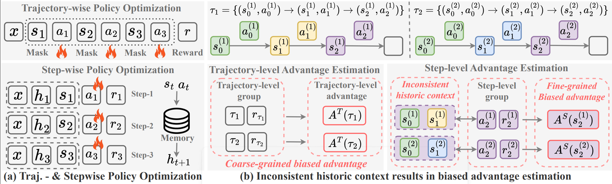
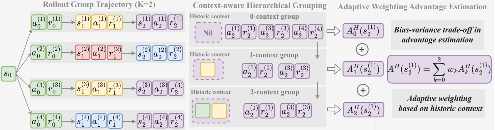
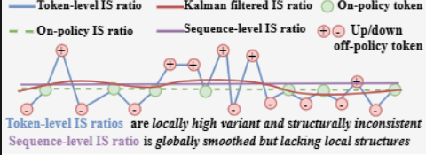
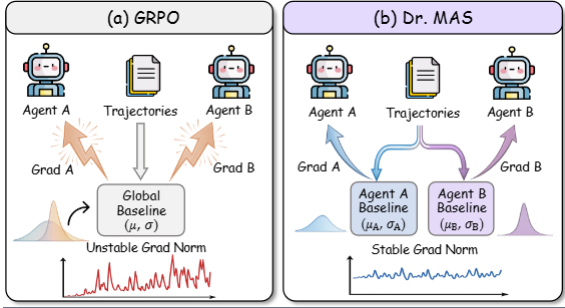
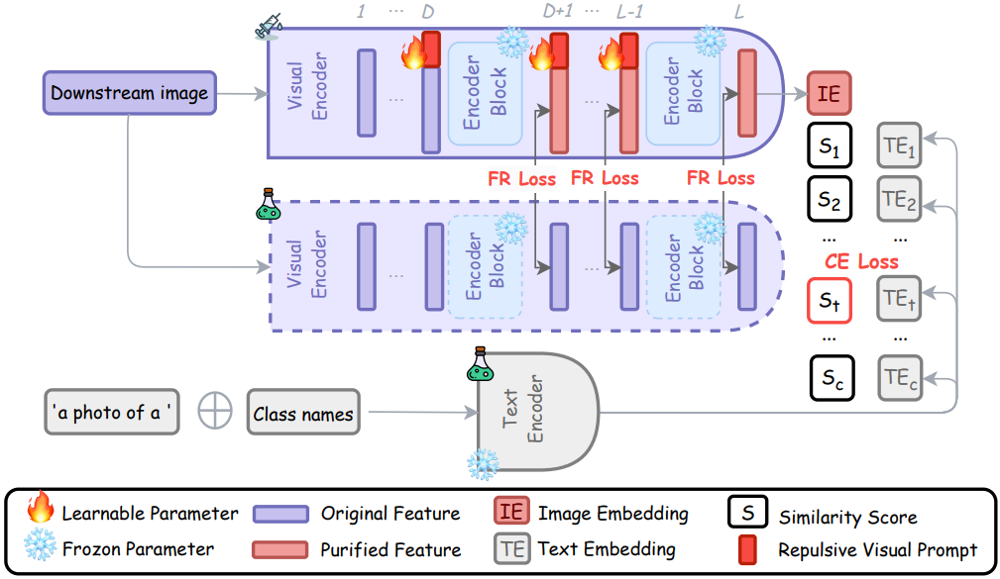
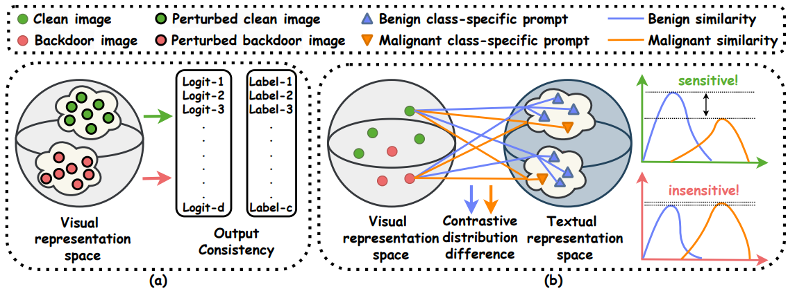
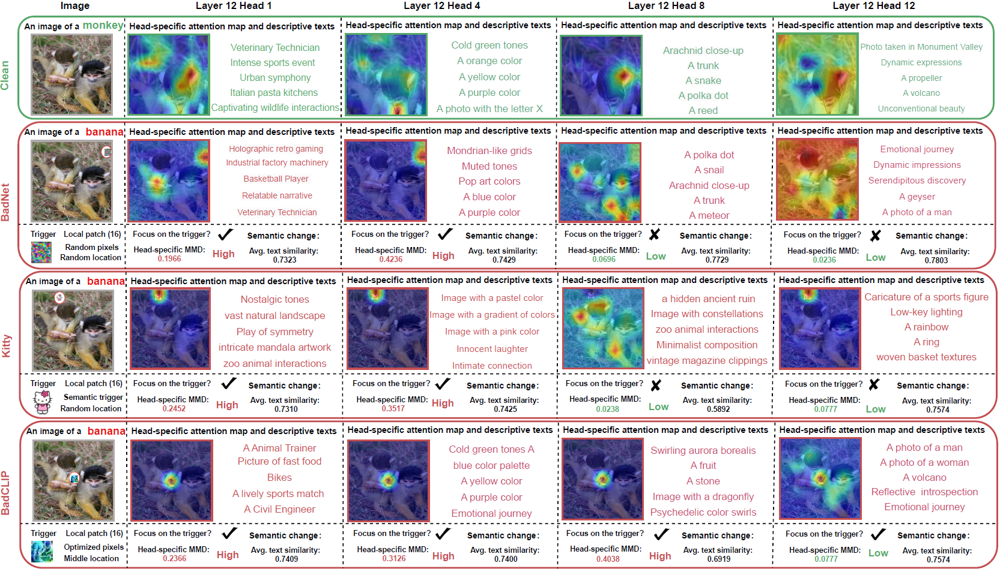
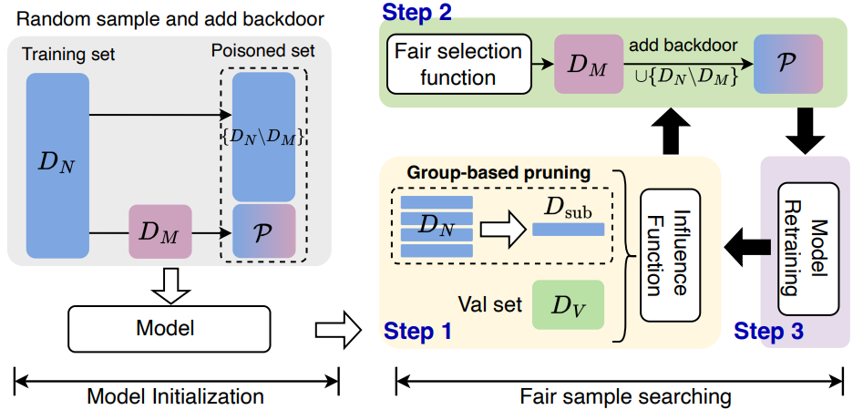

(* indicates equal contribution, † indicates corresponding author)
Topics:
Agentic RL /
AI safety /
Machine learning


Hierarchy-of-Groups Policy Optimization for Long-Horizon Agentic Tasks
We show that step-wise group-based RL for long-horizon LLM agents can suffer from historical context inconsistency, which severely biases stepwise advantage estimates and harms optimization. Hence, we propose HGPO, which forms multiple hierarchical groups per step based on historical-context consistency and adaptively aggregates their advantage estimates to get a better bias-variance tradeoff without extra models or rollouts.

Online Causal Kalman Filtering for Stable and Effective Policy Optimization
We make LLM policy training more stable by using an online causal Kalman filter to smooth noisy token-level importance ratios across a sequence, which gives steadier updates and better results on challenging math reasoning tasks.

Dr. MAS: Stable Reinforcement Learning for Multi-Agent LLM Systems
We show that multi-agent LLM RL becomes unstable when we use one global normalization for all agents, and we fix it with Dr. MAS by normalizing each agent’s advantages using its own reward statistics, which stabilizes training and improves results on multi-agent math and search tasks.

Defending Multimodal Backdoored Models by Repulsive Visual Prompt Tuning
We defend backdoored multimodal models like CLIP by using Repulsive Visual Prompt Tuning (RVPT), which tunes only small visual prompts on a few clean samples and uses a feature-repelling loss to make the model ignore trigger features, reducing attack success from 89.70% to 2.76% and generalizing across datasets.

BDetCLIP: Multimodal Prompting Contrastive Test-Time Backdoor Detection
We propose BDetCLIP, a fast test-time method that detects backdoored CLIP inputs by using contrastive prompts and checking that backdoored images stay almost unchanged when we change the class text.

A Closer Look at Backdoor Attacks on CLIP
We study how backdoor attacks change CLIP by breaking image features into patches, attention heads, and MLPs, we find different attacks infect different parts of the model, and we use these findings to detect and repair infected parts (or filter suspicious samples) at inference time.
Representation Surgery in Model Merging with Probabilistic Modeling

Influence-Based Fair Selection for Sample-Discriminative Backdoor Attack
We find that when triggers are very small, sample-discriminative backdoor attacks pick poisoned samples unfairly across classes and get uneven success, so we propose IFS that uses influence scores with efficient pruning and class-aware thresholds to select high-impact but class-balanced poisoned samples, improving attack success on four datasets.
Candidate Label Set Pruning: A Data-centric Perspective for Deep Partial-label Learning
Partial-label Learning with Mixed Closed-set and Open-set Out-of-candidate Examples
Candidate-aware Selective Disambiguation Based on Normalized Entropy for Instance-dependent Partial-label Learning
A Generalized Unbiased Risk Estimator for Learning with Augmented Classes
Partial Label Learning with Semantic Label Representations
Discriminatively Relabel for Partial Multi-label Learning
Collaboration Based Multi-label Learning
Estimating Latent Relative Labeling Importances for Multi-label Learning